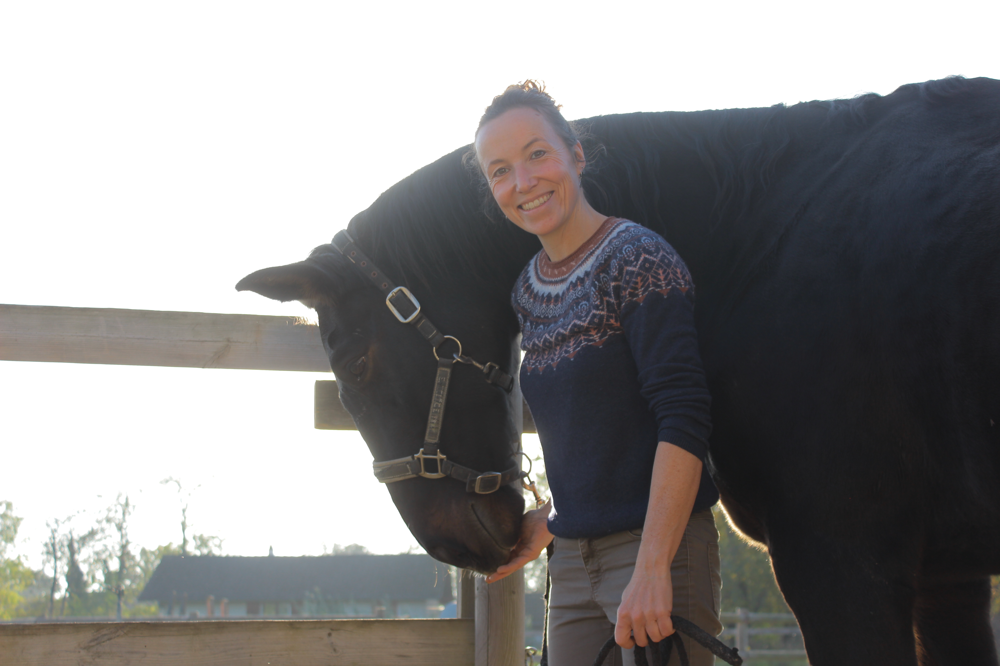
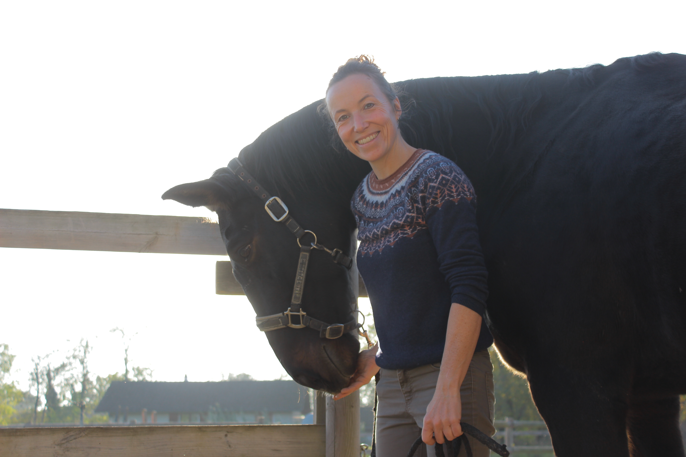
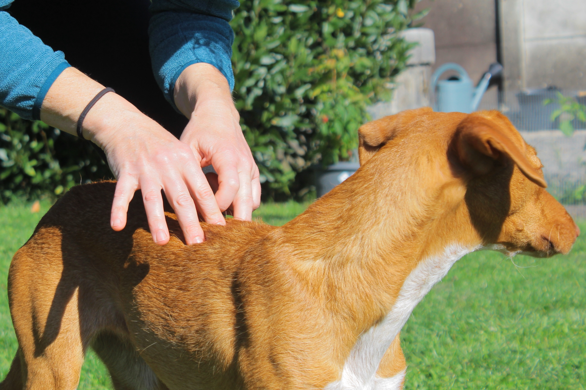
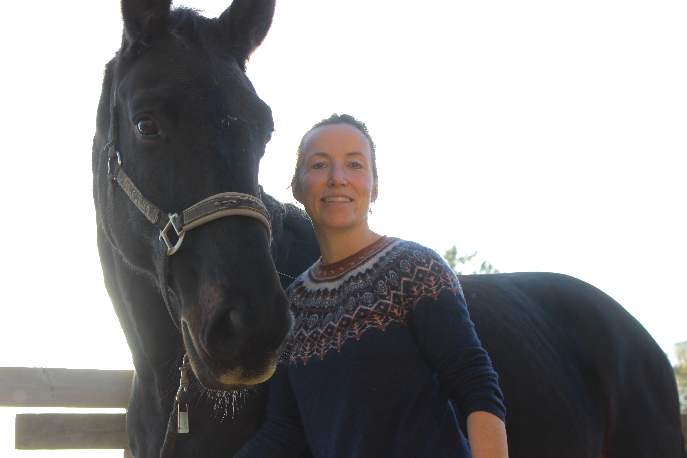
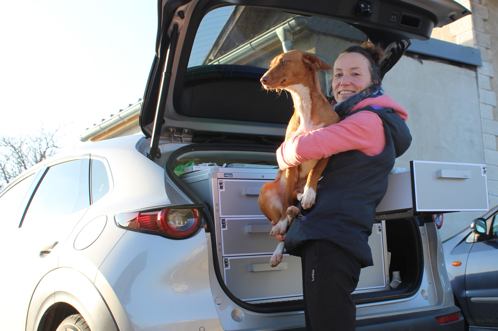
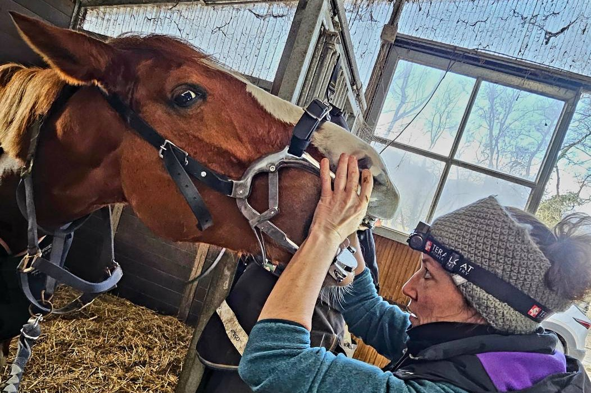
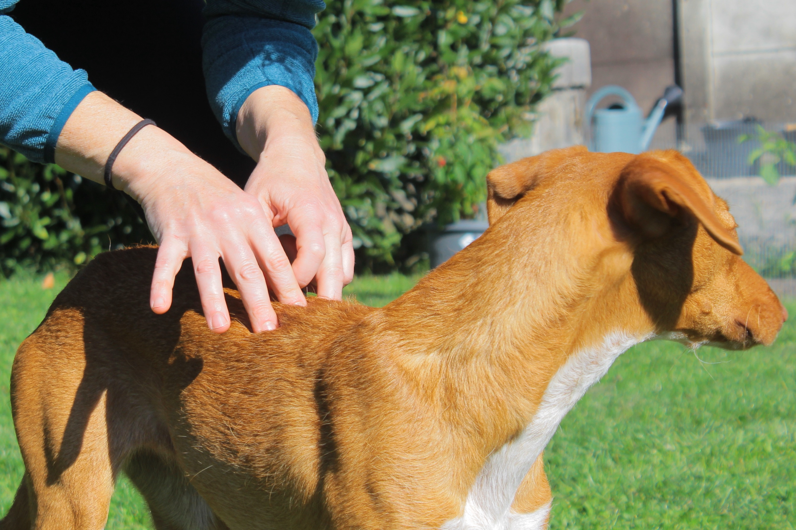
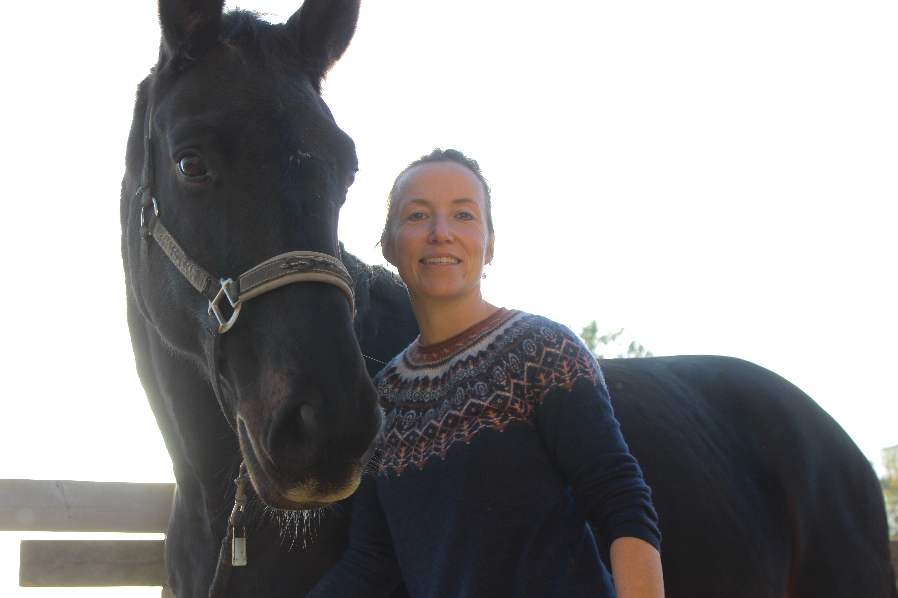
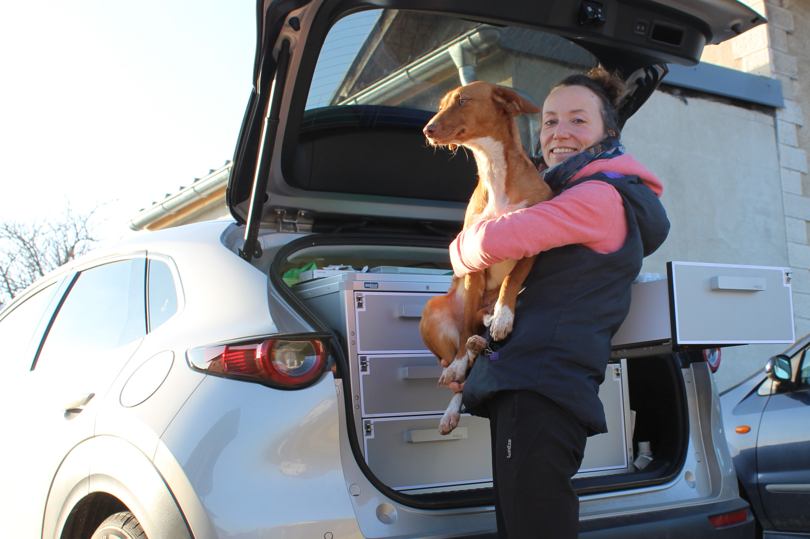
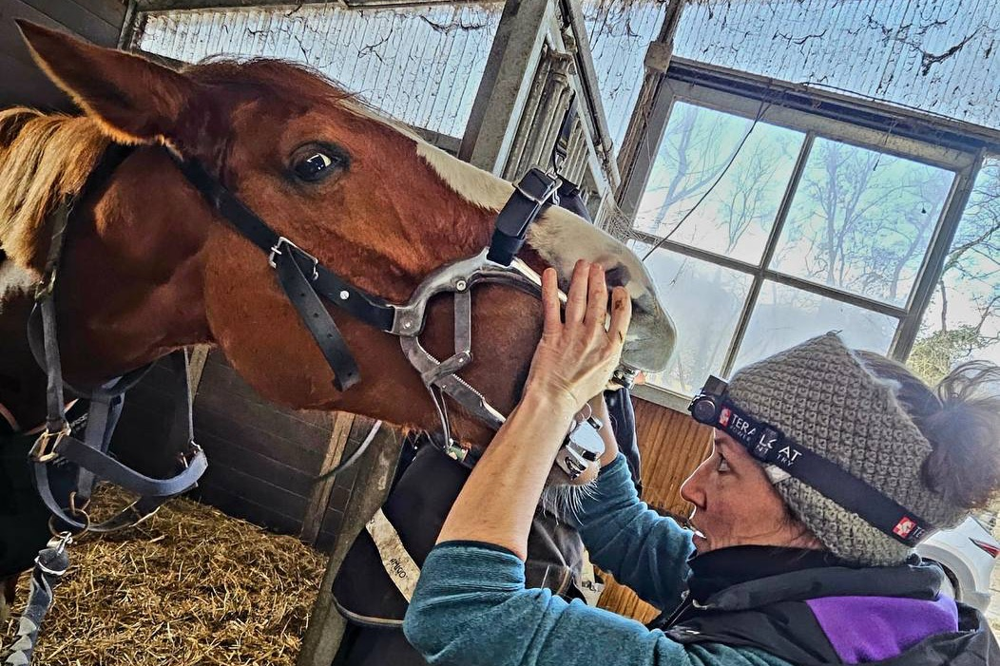

Dr. Stéphanie Vanhamme – Equine Veterinarian specializing in Traditional Chinese Medicine
Dr Stéphanie Vanhamme – Vétérinaire équin spécialisée en Médecine Traditionnelle Chinoise
Holistic Care Combining Western and Chinese Medicine
Des soins holistiques, combinant la médecine occidentale et chinoise
Offering a more integrative understanding of each pathology
Pour offrir une vision plus complète de chaque pathologie
Welcome!
Bienvenue !
I am an ambulatory equine veterinarian providing medical services in the Canton of Vaud, Geneva, and neighboring France.
Languages Spoken: French, English, and Dutch
Vétérinaire équin ambulatoire offrant ses services médicaux dans le Canton de Vaud, Genève et en France voisine.
Langues parlées : français, anglais et néerlandais
Services
Traditional Chinese Medicine
Médecine Traditionnelle Chinoise
Acupuncture, Chinese herbal medicine, Food Therapy, and Laser Therapy for horses and small animals.
Equine General Medicine
Médecine Générale Équine
Clinical exams, blood tests, ocular exams, biopsies, ultrasound and more.
Ambulatory Services for Dogs
Services à Domicile pour Chiens
Clinical exams, vaccination, stool analysis, blood tests, and ocular exams.
Equine Dentistry
Dentisterie Équine
Annual preventive care and management of oral discomforts.
Online Consultation
Consultation en Ligne
Contact me via email for remote consultations.
Contact Me
Contactez-moi
Dr. Stéphanie Vanhamme
+41 78 339 15 03
Email: svanhamme87@gmail.com
After-hours emergencies: A permanent service is provided in collaboration with the Veterinary Emergency Service of the Côte.
Urgences en dehors des heures : Une permanence est assurée en collaboration avec le Service d'Urgences Vétérinaires de la Côte.
For horses: 0900 075 012
For pets: 0900 075 011
Pour les chevaux : 0900 075 012
Pour les petits animaux : 0900 075 011
 



 








Presentation
Présentation
Since my childhood, I've always felt a special connection with animals. I began riding horses at age 8, and it wasn't long before I knew I wanted to become a veterinarian. After earning my veterinary degree from Ghent University in Belgium, I broadened my experience by volunteering at equine hospitals in the United States, England, and Australia, where I explored various specialized fields within equine medicine. I also worked as a voluntary veterinarian in Egypt, offering medical treatments to horses, donkeys and stray dogs.
I then practiced as an equine veterinarian in northern France. This hands-on experience enabled me to gain more advanced skills and deepen my knowledge through numerous conferences and additional training in the United States. I also participated in sterilization and care missions for stray animals, primarily dogs, in Nepal and India, which enabled me to expand my expertise by incorporating care for domestic animals in mixed practices (for horses and pets) in Belgium.
Motivated by a desire to be closer to the mountain, I relocated to the region in 2020, where I have worked as an equine veterinarian since.
Over the past several years, I have discovered the benefits of Traditional Chinese Medicine (TCM) for both horses and dogs. Through my experience in classical veterinary medicine, I have observed that for certain diseases, the underlying cause of the pathology is not well understood. As a result, the treatment often fails to provide a satisfactory and lasting solution, leading to a chronic condition. This awareness inspired me to look further and adopt a more integrative approach; one that views the entire organism and recognizes the connections between the different body systems.
Today, this holistic perspective allows me to better understand and treat each patient, offering a range of care tailored to each animal's needs. In addition to acupuncture, I use other branches of TCM, such as dietary therapy and Chinese herbal medicine, which are valuable tools for treating illness, managing pain and preventing potential physical or mental dysfunction. My goal is to provide comprehensive care, aimed at achieving the optimal well-being of each animal.
Depuis mon enfance, j'ai toujours eu une connexion particulière avec les animaux. J'ai commencé l'équitation à l'âge de 8 ans et, très vite, j'ai su que je voulais devenir vétérinaire. Après avoir obtenu mon diplôme en médecine vétérinaire à l'Université de Gand en 2011, j'ai enrichi mon expérience en travaillant comme bénévole dans plusieurs hôpitaux équins aux États-Unis, en Angleterre et en Australie, où j'ai exploré différents domaines spécialisés de la médecine équine. Je suis également partie travailler en Égypte, pour administrer des soins médicaux aux chevaux, ânes et chiens errants en tant que vétérinaire bénévole.
J'ai ensuite exercé ma profession de vétérinaire équin dans le nord de la France. Cette expérience de terrain m'a permis d'obtenir des compétences avancées et d'approfondir mes connaissances grâce à plusieurs congrès et formations complémentaires aux États-Unis et en Europe.
J'ai également participé à des missions de stérilisation et de soins pour animaux errants, principalement des chiens, au Népal et en Inde, ce qui m'a permis de diversifier mon expertise en intégrant des soins aux animaux domestiques dans différents cabinets mixtes (chevaux et petits animaux) en Belgique.
Animée par le désir de me rapprocher des montagnes, je me suis installée dans la région en 2020, où depuis j'ai exercé principalement en tant que vétérinaire équin.
Depuis plusieurs années, j'ai découvert les bienfaits de la Médecine Traditionnelle Chinoise (MTC) pour les chevaux et les chiens. Grâce à mon expérience en médecine vétérinaire classique, j'ai constaté que pour certaines maladies, l'origine de la pathologie n'est pas bien comprise. En conséquence, le traitement ne permet souvent pas de créer une solution satisfaisante et permanente, menant à une maladie chronique. Cette prise de conscience m'a orientée vers une approche plus intégrative, qui considère l'organisme dans sa globalité et reconnaît les liens entre les différents systèmes du corps.
Aujourd'hui, cette approche holistique me permet de mieux comprendre et soigner chaque patient, en offrant un éventail de soins adaptés aux besoins de chaque animal. En complément de l'acupuncture, j'utilise d'autres branches de la MTC, notamment la thérapie par l'alimentation et la phytothérapie chinoise, qui sont des outils précieux pour aider à remettre en équilibre l'animal. Mon objectif est d'offrir une prise en charge complète, visant le bien-être optimal de chaque animal.
About Acupuncture
Concernant l'acupuncture
Acupuncture, a pillar of Traditional Chinese Medicine (TCM) for approximately 3,500 years, is practiced worldwide for its preventive and therapeutic benefits. In TCM, physical and mental disorders are often linked to internal energy imbalances. Acupuncture aims to restore this balance by stimulating specific points on the body to improve the flow of energy, or "Qi," along pathways known as meridians.
These meridians are directly connected to organs, allowing acupuncturists to influence organ health, strengthen the immune system, and foster a harmonious balance between body and mind. The insertion of acupuncture needles also triggers nervous system responses, creating local and systemic regulatory effects within the body.
While acupuncture is often associated with pain relief, its benefits extend far beyond. Acupuncture is beneficial in various medical specialties for prevention, therapy, and rehabilitation of functional disorders (orthopedics, neurology), as well as psychosomatic or organic diseases (digestive, respiratory, etc.). Acupuncture stimulates the body's self-regulatory abilities and capacity, encouraging a more lasting result. For more chronic cases, repetition of this stimulation may be needed to enable the body to rebalance itself.
This approach considers the whole organism, including mental and emotional aspects. Rather than focusing solely on symptoms, acupuncture seeks to address the underlying cause of an issue.
In cases where the cause is irreversible, such as degenerative arthritis, Chinese medicine can help relieve pain and stiffness, reducing the need for long-term medication. With this holistic approach, acupuncture offers a natural and comprehensive solution for animal well-being, enhancing quality of life and reducing or avoiding dependency on medications.
L'acupuncture, pilier de la Médecine Traditionnelle Chinoise (MTC) depuis environ 3500 ans, est pratiquée dans le monde entier pour son efficacité préventive et curative. En MTC, les troubles physiques et mentaux sont souvent liés à des déséquilibres énergétiques internes. L'acupuncture vise à restaurer cet équilibre en stimulant des points spécifiques du corps, afin d'améliorer la circulation de l'énergie, ou "Qi", à travers les voies énergétiques appelées méridiens.
Ces méridiens sont directement connectés aux organes, permettant ainsi à l'acupuncteur d'agir sur la santé des organes, de renforcer le système immunitaire et de favoriser une harmonie globale entre le corps et l'esprit. Les aiguilles d'acupuncture déclenchent également des réponses du système nerveux, générant des effets régulateurs localement et de manière globale dans l'organisme.
Bien que souvent associée au soulagement de la douleur, l'acupuncture offre bien plus. L'acupuncture est bénéfique dans de nombreuses spécialités médicales pour la prévention, la thérapie et la réhabilitation de troubles fonctionnels (orthopédie, neurologie), les maladies psychosomatiques ou organiques (maladies digestives, respiratoires, etc.). Elle stimule la capacité d'autorégulation du corps, encourageant une guérison plus durable. Particulièrement pour les problèmes chroniques, la répétition de cette stimulation peut être nécessaire pour obtenir un résultat plus favorable.
Cette approche considère l'ensemble de l'organisme, y compris les aspects mentaux et émotionnels. Plutôt que de se concentrer uniquement sur les symptômes, l'acupuncture recherche la cause sous-jacente du problème.
Dans les cas où la cause est irréversible, comme une arthrose dégénérative, la médecine chinoise peut contribuer à atténuer les douleurs et raideurs, réduisant ainsi le besoin de traitements médicamenteux à long terme. Grâce à cette approche holistique, l'acupuncture offre une solution naturelle et complète pour le bien-être des animaux, favorisant une meilleure qualité de vie, en évitant ou limitant la dépendance de médicaments.
Chinese Pharmacotherapy
Pharmacothérapie Chinoise
Alongside acupuncture, which is considered the 'external treatment,' Traditional Chinese Medicine (TCM) has developed an 'internal treatment' for nearly every imbalance that can be identified in an animal's diagnosis. The prescription of Chinese herbal medicine is based on a thorough Chinese diagnostic process. Nearly 5,000 different medicines are described in the literature, with monographs detailing their origins, properties, and actions. These remedies are available in various pharmaceutical forms: decoctions, powders, pills, extracts, granules, and external preparations, with decoction being the most commonly used form. Traditional pharmacotherapy is indicated for the treatment of both acute and chronic conditions.
A côté de l'acupuncture, ce qui est considéré comme le 'traitement externe', la médecine Chinoise a développé un 'traitement interne' pour quasiment chaque déséquilibre que nous pouvons retrouver dans le diagnostic de l'animal. La prescription peut se faire une fois le diagnostic chinois a été posé. Près de 5000 médicaments sont décrits dans la littérature, sous forme de monographies relatant leur origine, leurs propriétés et leurs actions. Ils sont disponibles sous diverses formes galéniques : décoction, poudre, pilules, extraits, granulés et préparations à usage externe. La décoction est la forme la plus utilisée. La pharmacothérapie traditionnelle est indiquée aussi bien pour le traitement d'affections aiguës que chroniques.
Dietary Therapy – Nutrition
Thérapie alimentaire – diététique
TCM examines the effect of different foods on the body and their role in maintaining health and treating diseases. Based on traditional diagnostic principles, foods are prescribed synergistically—either alone or in combination with other therapeutic methods. After implementing a tailored dietary therapy, follow-up is essential to ensure that the body is not moving out of balance in the opposite direction of the initial condition.
La diététique de la MTC étudie l'action des aliments sur l'organisme et leur utilité pour la conservation de la santé et le traitement des maladies. Sur la base des règles diagnostiques traditionnelles de la MTC, les aliments sont prescrits de manière synergique, seuls ou en association avec d'autres techniques de la médecine. Après la mise en place d'une thérapie alimentaire sur mesure, le suivi est essentiel pour assurer de ne pas déséquilibrer le corps dans le sens opposé de la maladie initial.
Laser Therapy
Traitement au laser
For animals sensitive to needles, laser therapy provides an alternative to acupuncture by stimulating acupuncture points without the use of needles. Laser therapy is also a valuable tool for promoting the healing of tendinitis, reducing inflammation, accelerating wound healing, and treating both acute and chronic pain or edema. Certain scars may also cause problems if they cross a meridian and can be treated through laser biostimulation. The laser uses seven different frequencies, developed by Dr. Paul Nogier, which are applied either alone or in combination depending on the pathology. The frequency of treatments may vary depending on the condition and the recommended duration required to restore physiological functions.
Pour les animaux sensibles aux aiguilles, le laser permet une alternative à l'acupuncture en stimulant les points d'acupuncture sans piqûre. Le laser est également un outil précieux pour favoriser la guérison des tendinites, pour lutter contre l'inflammation, accélérer la cicatrisation des plaies, et traiter les œdèmes ou douleurs aïgues ou chroniques. Certaines cicatrises peuvent également créer des problèmes si elles traversent un méridien et peuvent être traité par la biostimulation du laser. Le laser comporte 7 différentes fréquences, développé par le Dr Paul Nogier, utilisés seules ou en combinaison selon la pathologie. Une répétition plus ou moins fréquente peut être conseilleé en fonction de la pathologie et le temps préconisé pour obtenir une restauration des fonctions physiologiques.
Services
Services
- Traditional Chinese Medicine Consultation for Horses, Dogs, and Cats: Acupuncture, Chinese pharmacotherapy (herbal medicine), food therapy, and laser therapy based on the principles of Traditional Chinese Medicine (TCM), tailored to the needs of each animal, whether for treatment of illness or preventive care.
- General Veterinary Consultation for Horses: Clinical examinations (for any illness, lameness, preventive care, pre-purchase exams, skin issues), blood tests, ocular exams, biopsies, laser therapy, ultrasound exam (orthopedic, abdominal and reproductive follow-up of mares).
- Ambulatory Services for Dogs: Clinical examinations (preventive care), home vaccination, stool analysis, blood tests upon request, and ocular exams.
- Equine Dentistry: Annual preventive care and management of oral discomforts.
- Emergency Consultation: In case of an emergency, please don't hesitate to contact me at +41 78 339 15 03. After-hours emergencies are handled in collaboration with the Veterinary Emergency Service of the Côte, available evenings, nights, and weekends.
For horses: 0900 075 012
For pets: 0900 075 011
- Online Consultation: If an in-person consultation is not possible, feel free to contact me via email for an online consultation. I will respond as promptly as possible.
- Consultation en Médecine Traditionnelle Chinoise pour chevaux, chiens et chats : acupuncture, pharmaco/phytothérapie chinoise et thérapie alimentaire selon les principes de la MTC, dans le cadre d'une maladie ou en prévention, adaptés aux besoins de chaque animal.
- Consultation Médecine générale pour chevaux : examens cliniques (maladie, boiteries, prévention, achat, problèmes de peau), analyses sanguines, examen oculaire, biopsies, échographie locomoteur, abdominale et suivi du cycle et de la gestation de juments, etc.
- Services à domicile pour chiens : examens cliniques (prévention), vaccination, coprologies, analyses sanguines sur demande et examen oculaire.
- Dentisterie pour chevaux : prévention annuelle, inconforts buccaux.
- Consultation d'urgence : en cas d'urgence, n'hésitez pas à me contacter au +41 78 339 15 03. Les urgences en dehors des horaires d'ouverture sont en collaboration avec le Service d'Urgences Vétérinaires de la Côte, qui assure une permanence le soir, la nuit et les week-ends.
Pour les chevaux : 0900 075 012
Pour les petits animaux : 0900 075 011
- Consultation en ligne : Si une consultation sur place n'est pas possible pour vous, vous pouvez me contacter pour une consultation en ligne par courriel. Je vous répondrai dans les plus brefs délais.
Contact Me
Contactez-moi
Dr. Stéphanie Vanhamme
Vétérinaire
Route de la Branvaude 54
CH-1290 Chavannes-des-Bois
+41 78 339 15 03
Email: svanhamme87@gmail.com